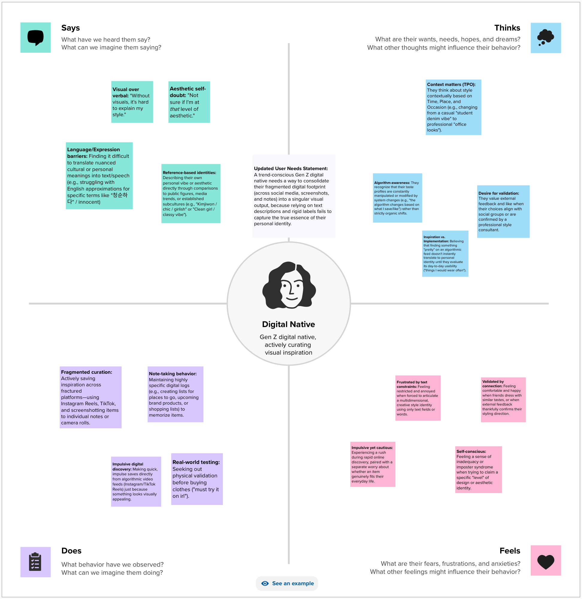
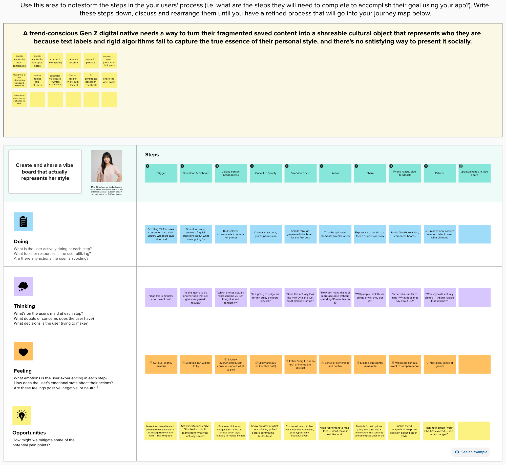
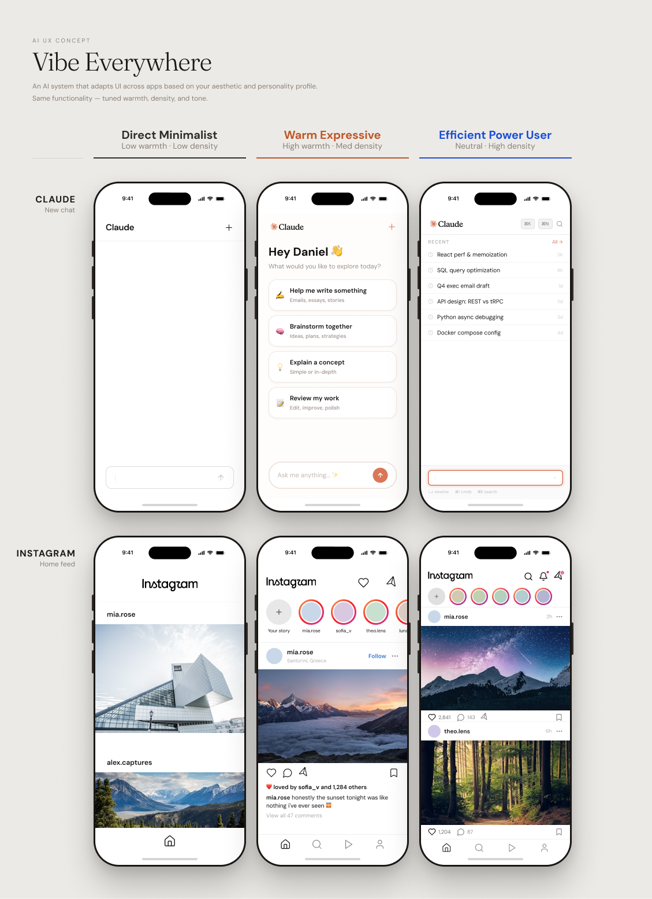

What is Vibe?
Vibe is an AI-powered mobile app concept that consolidates a person's fragmented digital taste data — camera roll, Spotify listening history, saved posts — into a single, shareable visual identity board. Think Spotify Wrapped, but for your entire aesthetic.
This was a solo project for Cognitive Science 112: Uncovering the Cognitive Science Behind the User Experience at UC Berkeley. Every phase — from interview planning to prototype testing — was completed in 4 weeks.
Text can't carry a vibe
Target user: Trend-conscious Gen Z digital natives (18–26) who actively curate visual taste across Pinterest, Instagram, TikTok, Spotify, and their camera roll — but struggle when asked to describe their own aesthetic in words.
Taste also evolves over time — shaped by algorithmic feedback loops, celebrity influence, and friend feedback — which text-based self-description can't capture. One interviewee noted her taste evolution is driven by platform algorithms ("the algorithm changes based on what I save/like") rather than organic change alone.
Two interviews changed everything
This is the most important beat of this case study. The project did not start as Vibe. It started as Identity OS — built on an assumption that turned out to be wrong.
The user needs statement evolved three times as research sharpened the problem:
Interviews, empathy mapping, journey mapping
Structured 1:1 interviews following a formal interview plan (target audience, recruitment approach, 5 core hypotheses, warm-up script) per the CogSci 112 UX research framework.
Three key insights synthesized from interviews:


The UI flow — 5 screens
The interface was generated using Figma Make (AI-generated UI) and tested with real users. Each screen was designed around a specific cognitive science or UX principle derived from research.
Empty state. Headline: "What's your vibe?" One circular "+" button — Create your vibe. A row of recent boards below.
Norman's discoverability — one question, one clear action, no unnecessary decisions at the entry point.
Two tappable cards: Camera Roll & Screenshots, Connect Spotify. Sources are combinable. "More inputs = more accurate vibe. We never store your data."
Clear affordances — designed because research showed taste data is never in one place.
"How should we read your vibe?" Two choices: Let AI decide (recommended) — full camera roll scan; or I'll pick my own — manual selection. Reassurance: "We only analyze. We never store your photos."
The key design decision: AI scan is recommended because manual self-selection introduces bias — people consciously pick what they think represents them, not what actually does. The camera roll captures real lifestyle, not a curated version.
"Reading your vibe... Mapping your visual mood." Animation with progress micro-copy.
Norman's feedback principle — transparency about what the system is doing builds trust and manages wait anxiety. Ambiguity is the stressor, not the wait time itself.
Aesthetic label ("Soft Minimalist + Vintage Warmth"), color palette, stat row (94% match, 12 photos, 4 songs), Refine / Share My Vibe buttons.
Designed as a "moment," not a results page — worth keeping and sharing. Natural mapping: palette from photos, keywords from playlists.

What usability testing actually found
Moderated usability tests with 2 participants — each given realistic task scenarios (e.g. "You want to use the app but your camera roll has personal photos in it — what do you do?"). Think-aloud protocol throughout.
The central lesson
The original assumption was wrong. Users don't need help discovering who they are — they need better ways to express who they already are. Two interviews were enough to rename the product and redirect the entire feature set.
The pivot from Identity OS → Vibe is the most direct demonstration of what research is actually for: not confirming what you already think, but finding the version of the problem that's actually true.
Three concrete next steps if this were to continue:
- Let users replace individual elements the AI got wrong — restoring control without redoing the whole scan
- Add a preview of exactly what the AI will analyze before the scan begins, for privacy-conscious users
- Expand inputs beyond photos and Spotify to Pinterest and Notes app, for a richer aesthetic read
Vibe Everywhere — design exploration (not yet user-validated)
Vibe already tells a user who they are. The next question: what if that same profile became a layer that other software adapts to — not just Vibe's own interface, but apps like Claude or Instagram, adjusted per person?
This connects to a real research lineage in HCI: adaptive interfaces — historically built for accessibility (motor-ability differences). Vibe Everywhere applies the same underlying logic to a different axis: aesthetic and personality fit. Cognitive science grounding: person-environment fit — satisfaction improves when an environment matches a person's traits.
The project has two distinct layers. The Profiler AI, what this project has covered so far, handles reading a person's taste data and translating it into interface-relevant axes. The Stylist AI, which is this Phase 2 vision, handles taking those axes and deciding what the interface actually does with them.
Three personas used to prototype the concept:

"Vibe already tells users who they are. Vibe Everywhere asks: what if the software they use every day could adapt to that answer — not by generating a new interface from scratch, but by selecting the right expression of it for each person?"